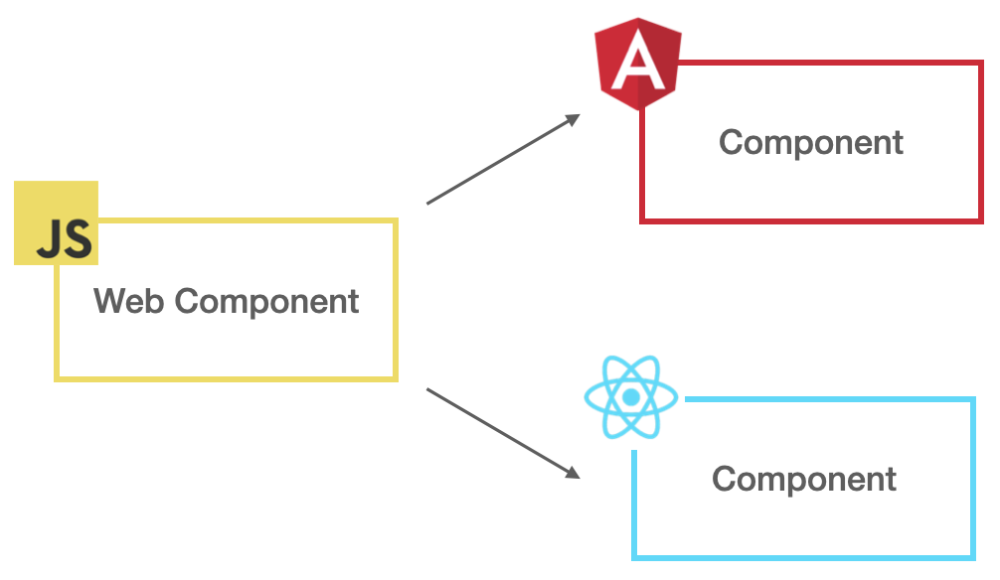
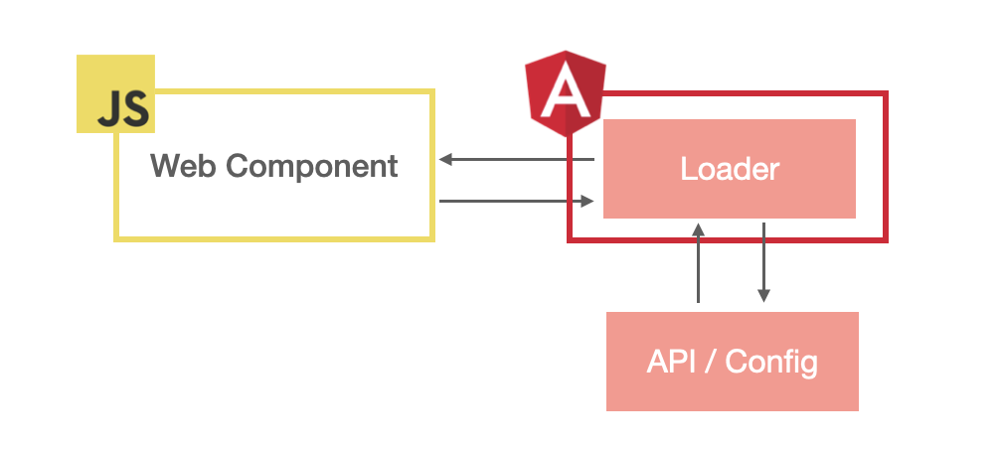

什麼是 Web Component？
Web Component 是一個封裝自定義元件的技術，讓我們可以輕易地在不同應用程式中重用這些被封裝的元件，
不僅如此，Web Component 不限定應用程式使用的框架或函式庫，不論今天是 Angular 或 React，甚至是 Vanilla JavaScript 都能夠輕鬆使用。
INFO：關於 Web Component 的詳細資訊可以參考 MDN。
為什麼需要 Web Component？
Web Component 的問世，可以實現較理想的 微前端（Micro Frontend） 概念，在過去，會以 iframe 的形式將其他團隊開發的元件、頁面嵌入至自己的系統內來實現微前端，但這樣的做法會有很多的限制，比如：跨域、生命週期等。
透過 Web Component 則可以避免這些問題，因為概念上就是將其他團隊開發的元件程式碼嵌入並串接至自己的系統裡。
NOTE：微前端也可以用 Module Federation 技術來實作，有興趣的話，可以參考相關文件。
動態載入 Web Component
目前常見的 Web Component 套用方式是將該元件推至 registry，提供給其他開發者安裝，甚至會針對不同的前端框架進行封裝，進而讓使用各種框架的開發者都可以用更貼近框架的做法來使用這些元件。

在某些情境下，我們可能會希望以 動態（Dynamic） 的方式將 Web Component 載入至自己的系統內使用，甚至能夠永遠使用最新版的元件，在這種較極端的情境下，就要實作一套機制來達到動態載入的效果。
流程設計
以下是一個很簡單的實現流程：
- Web Component 編譯後的 Chunk 掛在 CDN 上
- 應用程式透過 API 或設定檔取得 Web Component 的 url
- 透過 Loader 將 Chunk 載入
- 使用 Web Component

實作
根據流程設計可以得知，動態載入 Web Component 的關鍵點在於取得 Web Component Chunk 的 url 並透過某種 Loader 來將該 Chunk 載入，這裡 僅會針對這段進行實作，其餘細節將會省略。
NOTE：以下實作會以 Angular 16 當作範例。
為了簡化實作範疇，這裡採用設定檔的方式來設定 Web Component Chunk 的 url，Web Component 的 Chunk 也會放在 assets 資料夾內，以下是設定檔 config.json 的內容：
1
2
3
4
5
6
7
8
| {
"webComponents": [
{
"id": "rainbow-block",
"source": "assets/webComponents/rainbow-block.js"
}
]
}
|
設定檔內定義了 webComponents欄位告訴應用程式有哪些 Web Component 需要載入，資料結構為陣列，裡面每個元素會定義 id 與 source 來註記該 Web Component Chunk 的 id 與 url。
設置完 config.json 後，在專案內建立 web-component-dynamic-loader.service.ts 來實現動態載入 Web Component：
1
2
3
4
5
6
7
8
9
10
11
12
13
14
15
16
17
18
19
20
21
22
23
24
25
26
|
@Injectable({ providedIn: 'root' })
export class WebComponentDynamicLoaderService {
private readonly _document = inject(DOCUMENT);
load(id: string, source: string) {
const script = this._document.createElement('script');
if (this._document.getElementById(id)) {
return of(null);
}
script.src = source;
script.id = id;
this._document.head.appendChild(script);
return fromEvent<null>(script, 'load').pipe(
map(() => null),
take(1)
);
}
}
|
實作 ConfigStore 存放 config.json 的內容：
1
2
3
4
5
6
7
8
9
10
11
12
13
14
15
16
17
18
19
20
21
22
23
24
25
26
|
export interface Config {
webComponents: { id: string; source: string }[];
}
const isNotNull = <T>(config: T | null): config is NonNullable<T> =>
config !== null;
@Injectable({ providedIn: 'root' })
export class ConfigStore {
private readonly _config$ = new BehaviorSubject<Config | null>(null);
readonly config$ = this._config$.pipe(filter(isNotNull));
private readonly httpClient = inject(HttpClient);
loadConfig() {
return () => {
return this.httpClient.get<Config>('assets/config.json').pipe(
tap((config) => {
this._config$.next(config);
})
);
};
}
}
|
接著，在 app.config.ts 透過 APP_INITIALIZER 取得 config.json 的內容，並在此載入 Web Component：
1
2
3
4
5
6
7
8
9
10
11
12
13
14
15
16
17
18
19
20
21
22
23
24
25
26
27
28
29
30
31
32
33
34
|
export const appConfig: ApplicationConfig = {
providers: [
{
provide: APP_INITIALIZER,
useFactory: (configStore: ConfigStore) => {
return configStore.loadConfig();
},
deps: [ConfigStore],
multi: true,
},
{
provide: APP_INITIALIZER,
useFactory: (
configStore: ConfigStore,
loader: WebComponentDynamicLoaderService
) => {
return () => {
return configStore.config$.pipe(
take(1),
concatMap((config) => from(config.webComponents)),
mergeMap(({ id, source }) => loader.load(id, source)),
toArray()
);
};
},
deps: [ConfigStore, WebComponentDynamicLoaderService],
multi: true,
},
],
};
|
如此一來，便可以用動態的方式將 Web Component 載入。
NOTE：實作結果可以 clone 這個專案玩玩看。